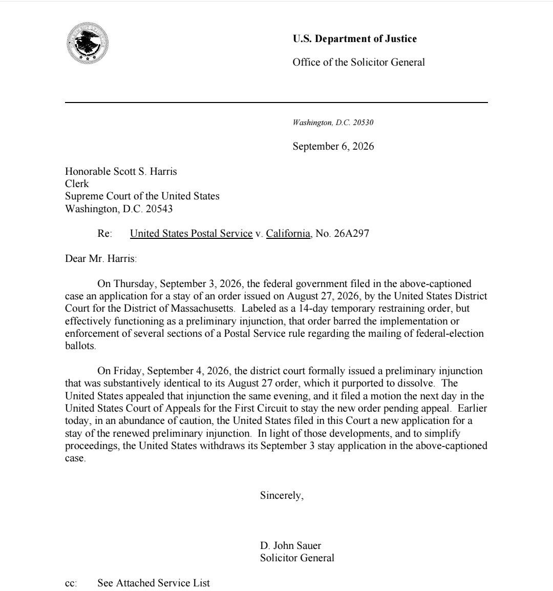
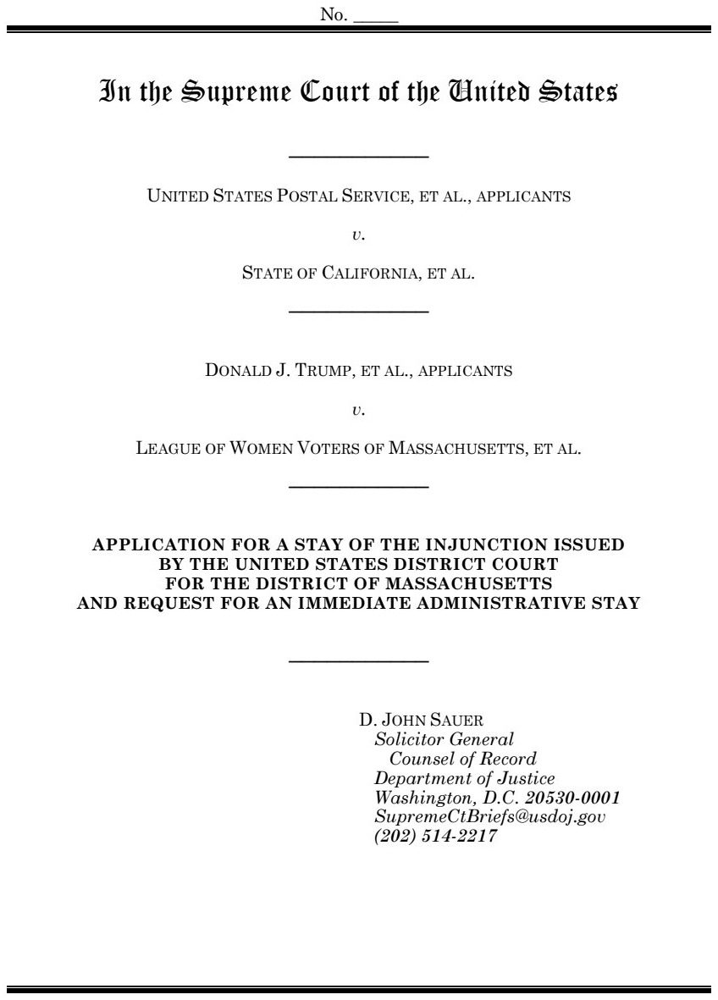
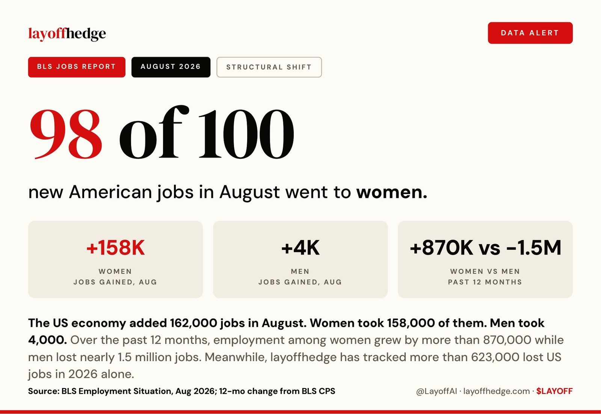
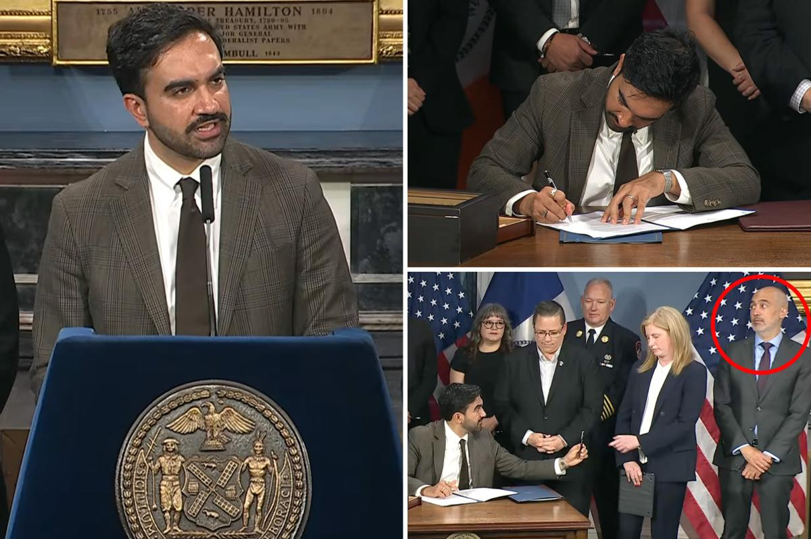
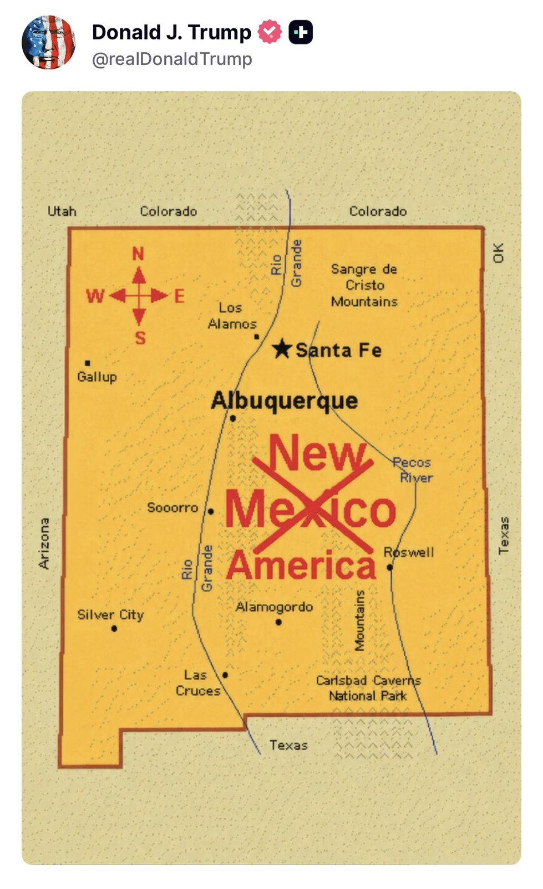
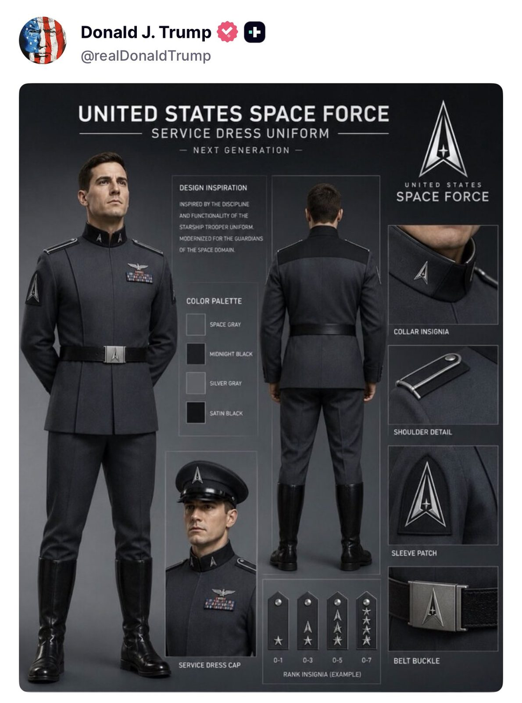

🚨 The Trump administration has again asked the Supreme Court to allow USPS’s new mail-ballot rules to take effect for the 2026 midterms, now challenging Judge Indira Talwani’s preliminary injunction after withdrawing its appeal of her earlier 14-day block.
Ukrainian media report new Trump peace plan brought by Kushner & Witkoff: • complete ceasefire •withdrawal of Ukrainian forces from Donbas & part of Zaporizhzhia Oblast with possible deployment of UN contingent there •Ukraine's non-aligned status and renouncing NATO accession •referendum and elections •constitutional amendments •Kyiv renouncing the forcible return of territories that would come under Russian control •:imitations on the size of the Ukrainian Armed Forces •agreements on language issues •and the signing of a full-fledged peace treaty by the new Ukrainian government, followed by ratification through a special procedure at the UN.
98 OF 100 NEW AMERICAN JOBS IN AUGUST WENT TO WOMEN
The economy added 162,000 jobs. Women took 158,000. Men took 4,000.
Past 12 months: women +870K, men -1.5M.

Mamdani hands symbolic 9/11 pen to former lawyer of al-Qaeda terrorist: 'tone deaf' https://t.co/UH4ZWlZmTi


A small natural object 1.5-5 feet (0.5-1.5m) is predicted to impact Earth’s atmosphere just northwest of Australia and safely disintegrate today, Sept. 6, 12:14 p.m. EDT. While not a hazard, scenarios like this provide an invaluable test of our planetary defense capabilities to monitor for larger objects and predict impact threats.
Austria 🇦🇹: The right-wing Freedom Party is leading at almost 40%
France 🇫🇷: Marine Le Pen leading the polls to be President
Germany 🇩🇪: Polls show AfD consistently the largest party.
Norway 🇳🇴: The right-wing/Libertarian party leading massively at 33.4%
Europe is changing.
